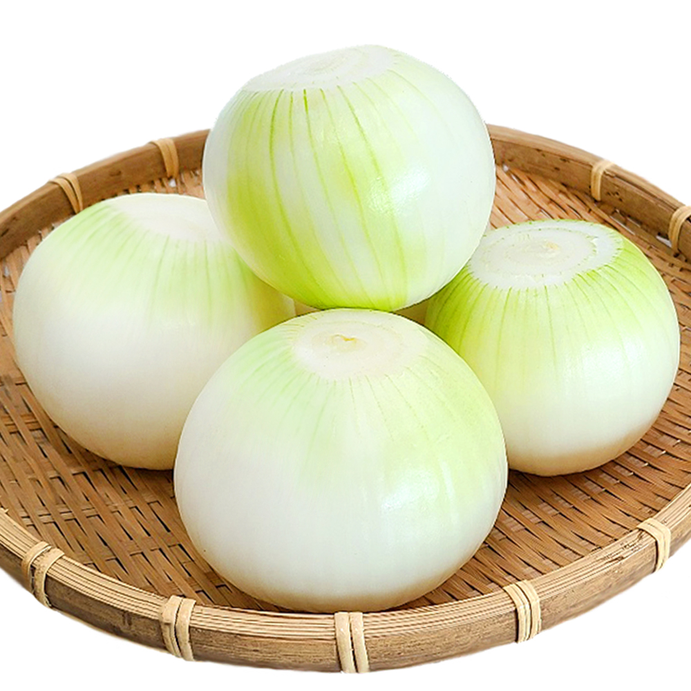
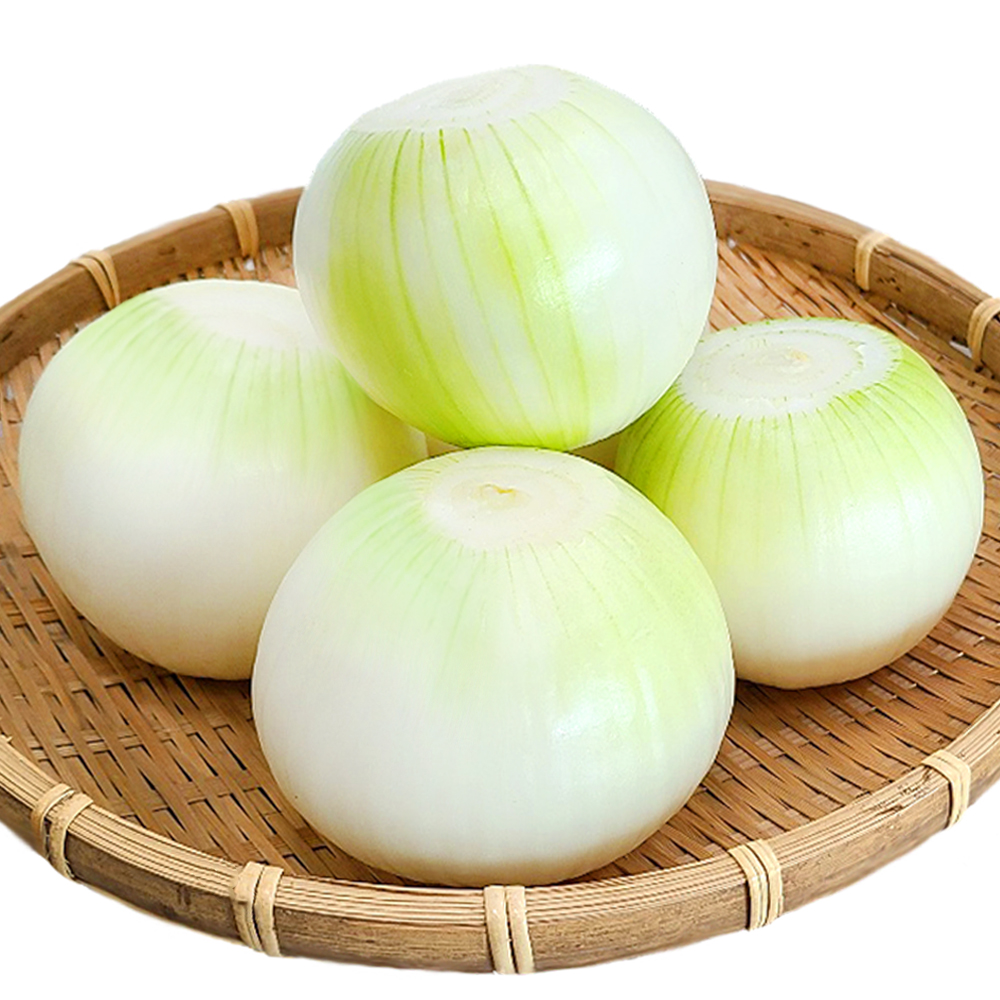

뚝배기 불고기
180,000
VND뚝배기 불고기+계란말이+김+반찬+공기밥

불고기는 동물의 고기를 얇게 썰어 양념으로 재운 뒤 불에 구워 먹는 한국 요리의 하나이다.
비빔밥, 냉면, 김치, 삼겹살, 갈비와 함께 한식을 대표하는 메뉴이다.
1. 고기는 미리 핏물을 뺀 상태로 준비해둔다.
2. 대파는 어슷썰기, 양파는 채를 썰어 준비한다. 버섯은 밑동을 잘라 뜯어내 사용한다.
3. 냄비에 물 반 컵(100ml)을 넣고, 5mm 크기로 썬 우지를 넣고, 볶아서 녹인다.
4. 간장, 물엿, 설탕, 간 사과, 다진 마늘, 맛술, 참기름, 후추를 넣고 잘 섞어 불고기 양념을 만든다.
5. 참기름을 두른 후 센 불에 고기와 양념을 우선 넣고 볶는다.
 
